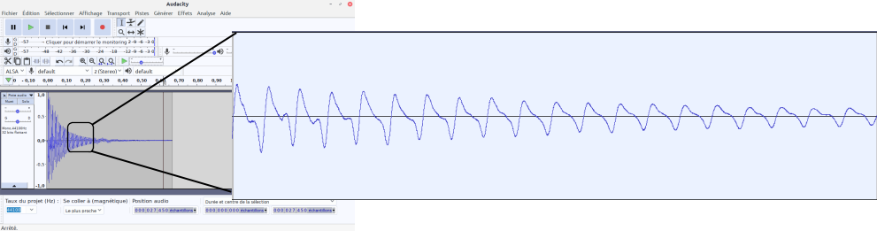

Par cette application, vous allez faire le lien entre la production de son par un instrument de musique (par exemple, une flûte) et les ondes stationnaires.
Vous vous souvenez des tubes qui trainaient sur mon bureau la semaine passée ? Et bien, vous allez comprendre ...
En tappant brièvement sur l'extrémité d'un de ces tubes (celui de la vidéo mesure 99,5 cm), un son est émis. Sa hauteur dépendra de la longueur du tube ...
De gauche à droite : Le mode fondamental, la première harmonique, la deuxième harmonique et l'onde totale
Donc, le son perçu possèdera une fréquence fondamentale égale à la fréquence fondamentale de l'onde stationnaire de pression régnant dans le tube. D'ailleurs, en analysant le son, on obtient ceci :
L'extrait séletionné couvre 5301 échantilloons ( 1 échantillon = 1/44100 ème de seconde ).